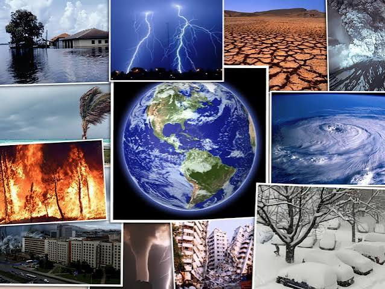
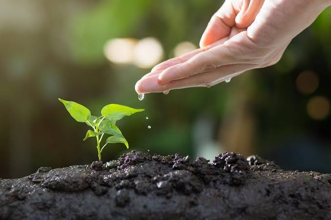

Comprensión científica
Adquirir conocimientos sobre los seres vivos, la materia, la energía y los procesos naturales que intervienen en el funcionamiento del mundo.
La especialidad de Ciencias promueve la comprensión de los fenómenos naturales y el estudio de los procesos que intervienen en la vida, la materia y el entorno. Su formación fortalece el pensamiento crítico, la curiosidad científica y la capacidad de interpretar el mundo mediante el conocimiento y la investigación.

La especialidad de Ciencias se orienta al estudio de los fenómenos naturales, los seres vivos, la materia y las relaciones que existen entre los organismos y su entorno. A través de una formación basada en conocimientos científicos, permite comprender diferentes procesos naturales y analizar situaciones desde una perspectiva fundamentada.
Esta preparación fomenta la observación, la investigación, el razonamiento lógico y la interpretación de información. Asimismo, contribuye al desarrollo de una actitud responsable frente al ambiente, la salud y los avances científicos que influyen en la sociedad.
La formación científica busca proporcionar conocimientos y herramientas intelectuales que permitan interpretar fenómenos naturales, desarrollar el pensamiento crítico y comprender la relación entre la ciencia y la vida cotidiana.
Adquirir conocimientos sobre los seres vivos, la materia, la energía y los procesos naturales que intervienen en el funcionamiento del mundo.
Analizar información, establecer relaciones entre diferentes fenómenos y formular conclusiones fundamentadas en evidencias.
Desarrollar la curiosidad, la observación y la capacidad de plantear preguntas para comprender situaciones y problemas del entorno.
Reconocer la importancia de proteger los ecosistemas, cuidar los recursos naturales y aplicar los conocimientos científicos de manera responsable.
Las ciencias comprenden diferentes campos de estudio que permiten analizar la naturaleza desde distintas perspectivas. Cada área aporta conocimientos específicos para explicar los procesos que ocurren en los seres vivos, la materia, el planeta y el universo.

La biología estudia los seres vivos, su estructura, funcionamiento, origen y evolución. También analiza las relaciones entre los organismos y el ambiente, proporcionando conocimientos fundamentales para comprender la biodiversidad y los procesos que sostienen la vida.
La química estudia la composición, las propiedades y las transformaciones de la materia. Sus principios permiten explicar las reacciones químicas que ocurren en los organismos, los materiales, los alimentos y numerosos procesos industriales y ambientales.
La física analiza la materia, la energía, el movimiento y las interacciones que intervienen en los fenómenos naturales. Sus conocimientos permiten comprender procesos relacionados con la luz, el sonido, la electricidad, el calor y las fuerzas.
Este campo aborda la composición y los procesos del planeta, así como las relaciones entre los seres humanos y los ecosistemas. Facilita la comprensión del clima, los recursos naturales, la contaminación y la importancia de conservar el equilibrio ambiental.
Cada asignatura aporta conocimientos y habilidades que permiten comprender mejor el mundo, desarrollar el pensamiento crítico y afrontar diferentes situaciones. Desde las ciencias y las matemáticas hasta la comunicación, las humanidades y las artes, todas contribuyen a una formación integral.
Conoce qué estudia cada materia, cuáles son sus principales propósitos y cómo sus conocimientos pueden aplicarse en la vida cotidiana.
Estas materias permiten comprender los seres vivos, estudiar las propiedades de la materia y utilizar herramientas matemáticas para analizar información y resolver problemas.
La Biología es la ciencia que estudia los seres vivos, su estructura, funcionamiento, reproducción y evolución. También analiza las relaciones entre los organismos y el ambiente. Sus conocimientos permiten comprender los procesos de la vida, la biodiversidad y la importancia de conservar los ecosistemas.
La Química estudia la composición, las propiedades y las transformaciones de la materia. Permite comprender cómo interactúan las sustancias y explicar los cambios químicos que ocurren en los organismos, los alimentos, los materiales y el ambiente. Es fundamental para numerosas aplicaciones científicas e industriales.
La Matemática estudia los números, las operaciones, las formas, las magnitudes y las relaciones entre diferentes cantidades. Ayuda a desarrollar el razonamiento lógico, realizar cálculos, interpretar datos y encontrar soluciones a problemas cotidianos, científicos y tecnológicos.
Estas asignaturas fortalecen la comprensión de mensajes, la expresión de ideas y la capacidad de comunicarse de manera efectiva en diferentes situaciones.
Lengua y Literatura estudia el lenguaje, la comunicación y las distintas formas de expresión oral y escrita. También desarrolla la comprensión lectora y el análisis de obras literarias y otros textos. Permite expresar ideas con claridad, interpretar mensajes y comprender diferentes perspectivas culturales.
Inglés es una asignatura orientada al aprendizaje de una lengua extranjera. Desarrolla habilidades para comprender mensajes, leer textos, escribir y comunicarse oralmente. Su dominio facilita la interacción con personas de otras culturas y permite acceder a información académica, científica y profesional.
Estas áreas permiten reflexionar sobre las ideas, comprender los procesos históricos, analizar la vida en sociedad y reconocer los derechos y las responsabilidades de las personas.
La Filosofía reflexiona sobre preguntas relacionadas con el conocimiento, la verdad, la realidad, la existencia y la conducta humana. Favorece el pensamiento crítico, la argumentación y el análisis de diferentes ideas para construir opiniones razonadas y fundamentadas.
La Historia estudia los acontecimientos y procesos de las sociedades a través del tiempo. Analiza las transformaciones políticas, económicas, sociales y culturales, y permite comprender cómo las experiencias del pasado se relacionan con las características del mundo actual.
Esta materia aborda los derechos, las responsabilidades, la democracia y la participación ciudadana. Ayuda a comprender la organización de la sociedad, la importancia de las normas y los principios de igualdad, respeto y convivencia que favorecen una participación responsable en la comunidad.
Esta área promueve la formación ciudadana, el respeto de los derechos humanos, la convivencia armónica y el desarrollo socioemocional. Favorece habilidades como la empatía, la comunicación, el manejo de emociones, la resolución pacífica de conflictos y la participación responsable.
Estas materias fortalecen la creatividad, la iniciativa, la expresión cultural, la actividad física y las habilidades personales necesarias para desenvolverse en distintos entornos.
El Emprendimiento se relaciona con la identificación de necesidades y oportunidades para crear ideas, iniciativas y proyectos. Desarrolla capacidades de planificación, organización de recursos, creatividad y toma de decisiones. También permite analizar alternativas y valorar la viabilidad de diferentes propuestas.
Educación Cultural y Artística promueve la creatividad, la sensibilidad y la expresión mediante diferentes manifestaciones artísticas y culturales. Permite explorar técnicas, apreciar obras, experimentar con materiales y comprender cómo el arte comunica ideas, emociones, experiencias e identidades.
Educación Física utiliza el movimiento corporal, los juegos y las actividades deportivas para desarrollar habilidades motrices, coordinación, equilibrio y cooperación. También fomenta el trabajo en equipo, la participación respetuosa y los hábitos relacionados con el bienestar y el cuidado del cuerpo.
La formación complementaria reúne aprendizajes que apoyan el desarrollo académico, personal y social. Sus actividades pueden reforzar conocimientos, habilidades de organización, responsabilidad, convivencia y participación en la comunidad educativa, de acuerdo con los objetivos definidos para cada espacio.
Cada asignatura aporta una perspectiva diferente y complementaria. La combinación de conocimientos científicos, matemáticos, lingüísticos, culturales y sociales ayuda a desarrollar el pensamiento crítico, la creatividad, la comunicación y la capacidad de seguir aprendiendo durante las diferentes etapas de la vida.
El aprendizaje de las ciencias favorece el desarrollo de capacidades para interpretar fenómenos, analizar información y comprender situaciones del entorno. Estas competencias permiten construir conocimientos fundamentados y abordar problemas de manera crítica.
Consiste en identificar características, examinar fenómenos y reconocer relaciones entre diferentes elementos. Esta capacidad ayuda a comprender situaciones y formular explicaciones fundamentadas.
Implica formular preguntas, buscar información, plantear posibles explicaciones e interpretar evidencias. La investigación fomenta la curiosidad y la comprensión de los procesos naturales.
Permite evaluar información, comparar explicaciones y reconocer la diferencia entre una opinión y una conclusión respaldada por evidencias. Favorece la toma de decisiones razonadas.
Promueve la comprensión de los ecosistemas, el uso responsable de los recursos naturales y la importancia de conservar la biodiversidad para proteger el equilibrio del ambiente.
El aprendizaje científico combina conceptos teóricos con la observación, el análisis y la interpretación de fenómenos. Mediante estos procesos se construyen explicaciones fundamentadas y se comprende mejor el mundo natural.
Identificar un fenómeno, reconocer sus características y determinar qué aspectos necesitan una explicación.
Plantear interrogantes que permitan delimitar un problema y orientar la búsqueda de información relevante.
Examinar datos, interpretar resultados y contrastar las observaciones con los conocimientos científicos disponibles.
Relacionar los resultados obtenidos con la pregunta inicial y elaborar explicaciones coherentes con las evidencias.
La investigación científica puede seguir diferentes procedimientos según el fenómeno estudiado, la pregunta planteada y los métodos utilizados.
Los conocimientos científicos contribuyen a comprender problemas y desarrollar soluciones en diferentes ámbitos de la sociedad. Sus aplicaciones abarcan la salud, la protección ambiental, la alimentación y la investigación.
Los conocimientos científicos ayudan a comprender el funcionamiento del cuerpo humano, investigar enfermedades y desarrollar estrategias de prevención, diagnóstico y tratamiento.
La investigación permite estudiar los ecosistemas, analizar los efectos de la contaminación y comprender la importancia de conservar los recursos naturales y la biodiversidad.
El estudio de la composición, conservación e inocuidad de los alimentos contribuye a comprender su calidad y los factores que influyen en la alimentación humana.
El conocimiento científico favorece el desarrollo de nuevos materiales, procedimientos e instrumentos que permiten estudiar fenómenos y responder a distintas necesidades sociales.
La formación científica proporciona conocimientos que pueden servir como base para continuar estudios superiores en diferentes campos. La elección de una carrera depende de los intereses personales, los planes académicos y los requisitos de cada institución.
Campo dedicado al estudio de la salud humana, la prevención de enfermedades y el bienestar de las personas.
Área enfocada en los seres vivos, los ecosistemas, la biodiversidad y el estudio del ambiente.
Campo que estudia las propiedades de la materia, la energía, las sustancias y sus transformaciones.
Área que estudia la composición, elaboración, conservación, calidad e inocuidad de los alimentos.
Las carreras mencionadas son ejemplos de opciones relacionadas con las ciencias. La denominación, disponibilidad y requisitos de ingreso deben verificarse en la institución de educación superior correspondiente.
Reconocer las habilidades, preferencias y objetivos académicos constituye un primer paso para explorar diferentes alternativas educativas. Un test de orientación puede ayudarte a reflexionar sobre tus intereses y conocer las especialidades disponibles en la institución.
Realizar test de orientación Una herramienta de orientación para explorar posibilidades académicas.Cada especialidad ofrece diferentes campos de aprendizaje y posibilidades de desarrollo académico. Conocer sus características permite comparar enfoques educativos y reconocer cuáles se relacionan con los intereses y objetivos personales.
Orientada al diseño, la programación y la creación de soluciones digitales. Comprende el análisis de problemas, el desarrollo de aplicaciones y los fundamentos de los sistemas informáticos.
Ir a Desarrollo de SoftwareRelacionada con la administración de recursos, el análisis de información financiera, la planificación económica y la organización de actividades administrativas y empresariales.
Ir a Gestión Financiera